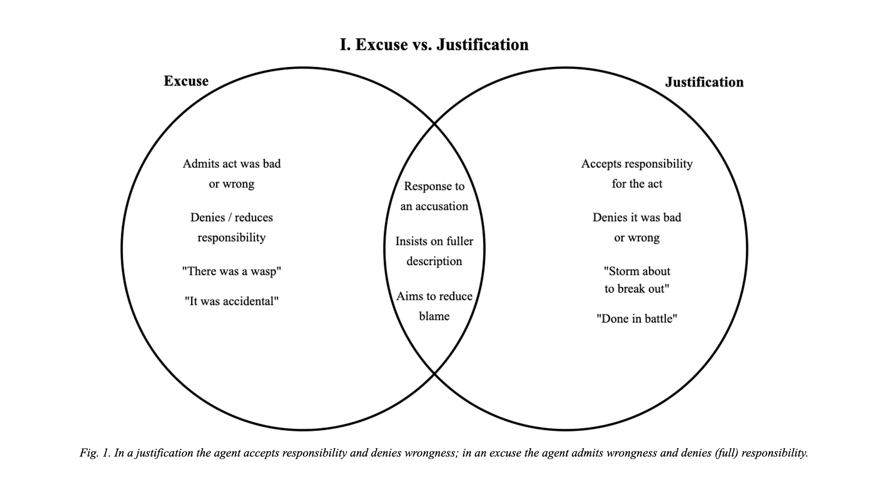
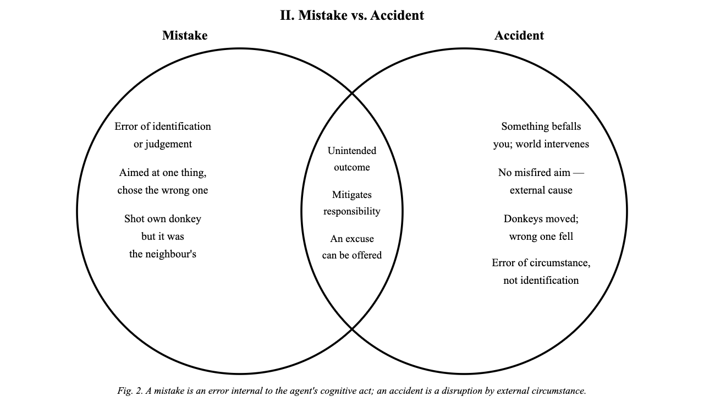
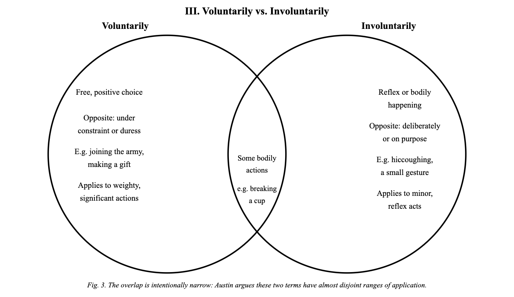
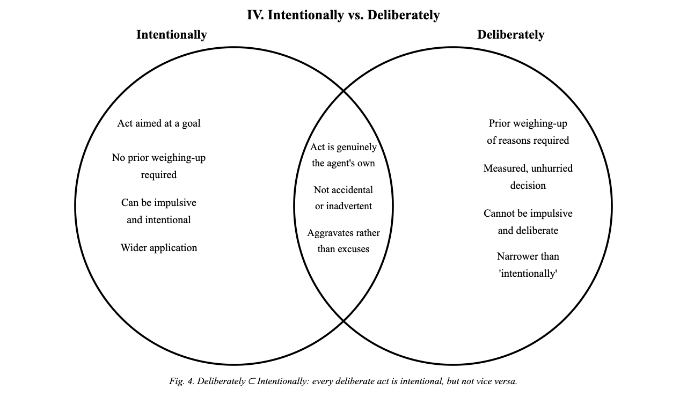

Published May 09, 2026
Excuse vs Justification: Austin's first and most foundational distinction. The overlap is real and he acknowledges it. Words like "extenuation," "mitigation," and "provocation" genuinely straddle both. But the underlying logic is cleanly asymmetric. Excuses say it was bad but not really mine, justifications say it was mine but not bad.

Mistake vs Accident: the famous donkey footnote. Both excuse the agent and involve an unintended outcome, but the locus of error differs sharply. A mistake is an error in your own cognitive act (misidentification, misjudgement). An accident is a disruption by the world, something befalls you. Austin's etymology note is telling: in an accident, something falls upon you (accidit); in a mistake you take the wrong one.

Voluntarily vs Involuntarily: this diagram deliberately has a thin overlap, because Austin's point is unusually strong here. He says these are "fish from very different kettles." You can tell because their opposites point in entirely different directions: the opposite of "voluntarily" is "under constraint/duress," whereas the opposite of "involuntarily" is "deliberately/on purpose." For Austin, the fact that two words look like a neat pair (-ly / un-) doesn't mean they actually divide a single spectrum between them.

Intentionally vs Deliberately: Austin's subtlest distinction. Both terms aggravate rather than excuse, and both mark the act as genuinely the agent's own. But unlike "intentionally," "deliberately" adds a prior weighing-up of reasons, a measured and unhurried quality of decision. This is why you can act impulsively and intentionally at the same moment. Because you meant to do it, even if on the spur. But you cannot act impulsively and deliberately, since deliberateness requires that pause for consideration. Austin also notes that "on purpose" sits in a slightly different place again, wider than "deliberately" but not quite the same as "intentionally." The three terms form a cluster that philosophy has treated as synonymous, but which ordinary language, under examination, reveals to be a nested and non-interchangeable family.
